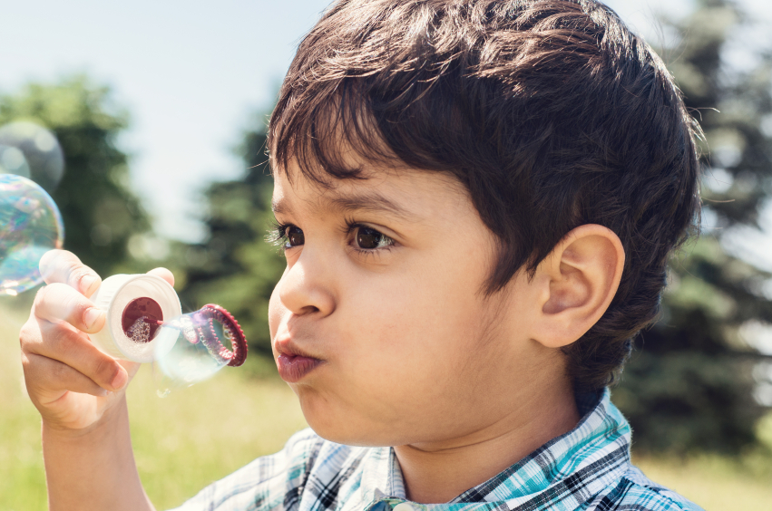

AKROSH COMPANY
AKROSH COMPANY
the organisation of ARA Foundation for Charity

7-Year-Old Donor Gives a New Lease of Life to Four Others as a Parting Gift
After a holiday in Mumbai, the Udani family was all set to return to Australia, when tragedy struck. Their seven-year-old son Deyaan was suffering from severe headache and suddenly collapsed on January 22, a few hours before their flight to Sydney. Deyaan
was rushed to Nanavati Hospital where doctors found that he had multiple blood clots in his brain. He was then shifted to the PD Hinduja Hospital and underwent a surgery to release the pressure inside the brain, on January 27.
Deyaan did not respond to the surgery and was declared brain dead.
The family decided to donate his organs to four critically ill patients.
His heart was given to Madhavi Vishwakarma, who is the same age as him. Madhavi, who was suffering from dilated cardiomyopathy, had been on Fortis Hospital’s waiting list for over a month. After Deyaan’s heart was harvested, the traffic
police cleared the road and helped the team of doctors reach Fortis Hospital in 18 minutes. Madhavi’s condition is now stable and she is being kept under observation. After the transplant, Deyaan became Mumbai’s youngest donor and Madhavi
the city’s youngest recipient. Deeyan’s liver was donated to a 31-year-old man at Jupiter Hospital. And two boys aged 11 and 15, both in Jaslok Hospital, were the recipients of his kidneys. According to The Logical Indian, Deyaan’s mother
said, “Once he asked how he could become an organ donor after seeing my driving licence (in Australia the licence mentions if the person is an organ donor).” After that, he asked them to put him on the organ donor list. The Udani family’s
courage in thinking of the lives of others in a time of grief, must be appreciated.